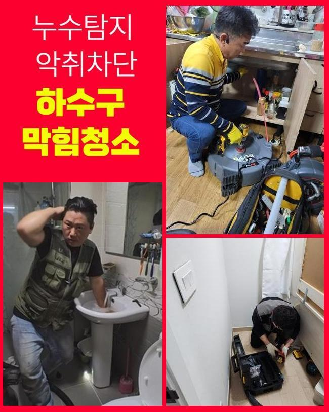
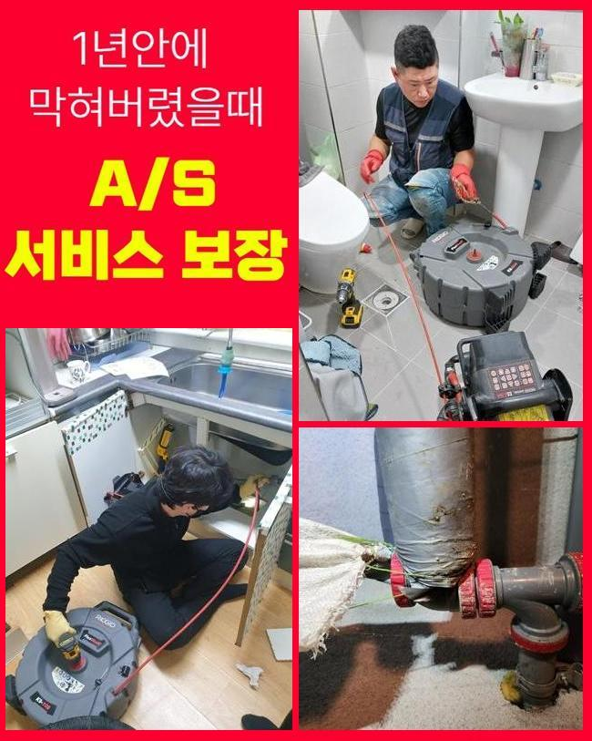
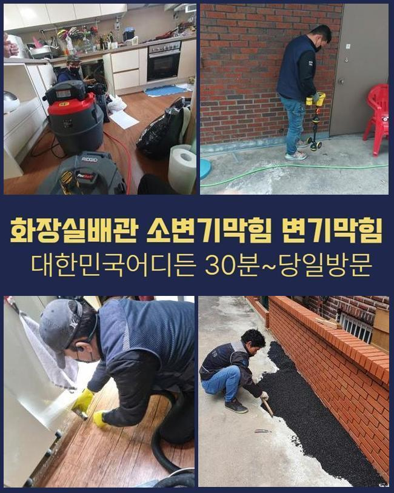
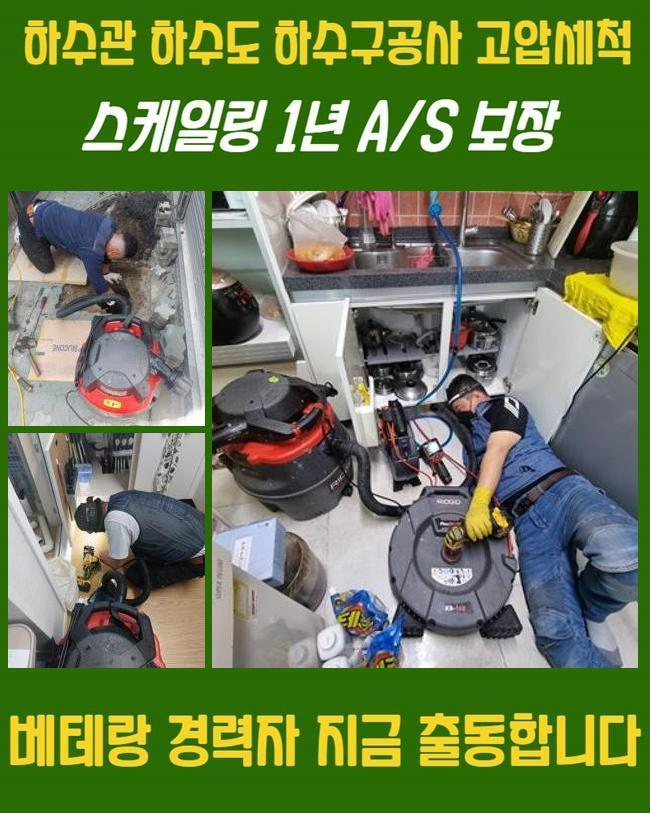
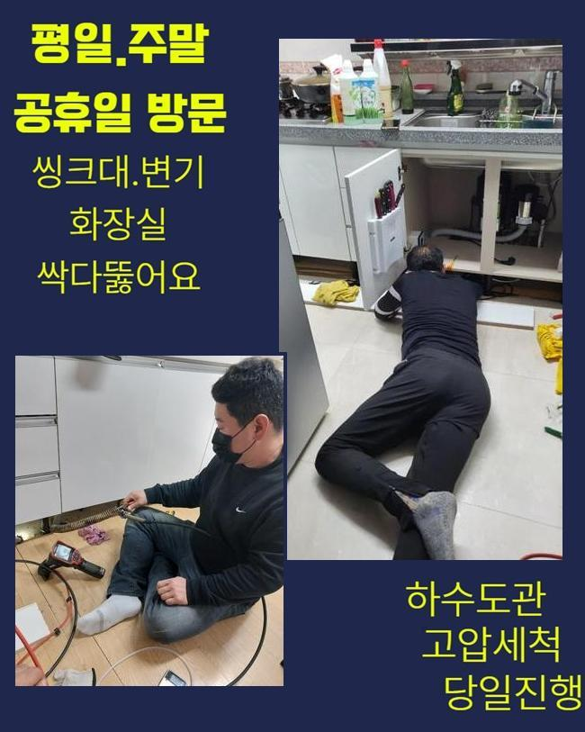
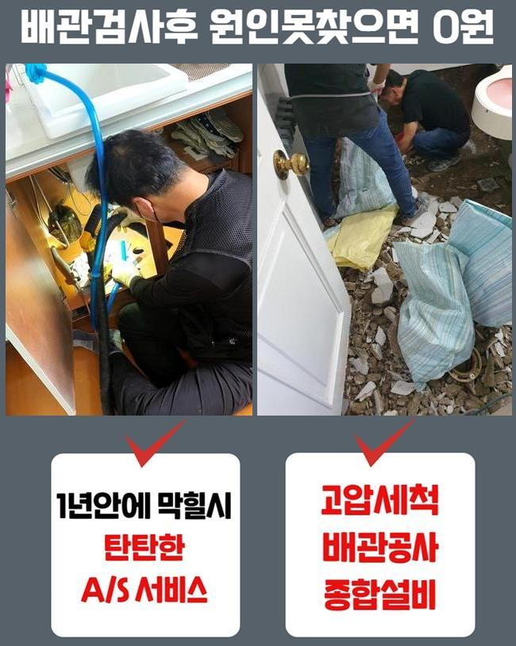

🏠 이천 증일동씽크대뚫음 율면 횡주관청소 통수전문
용인 싱크대막힘 전문 시공 후기

📋 작업 개요
- 위치: 용인
- 서비스 유형: 싱크대막힘, 하수구막힘, 배관막힘, 뚫는업체, 배관청소, 고압세척
- 작업 일시: 2025. 1. 30. 15:52
- 업체명: 하수구수사대 (010-5615-2118)
🔍 문제 상황
이천 증일동씽크대뚫음 율면 횡주관청소 통수전문
얼마전에 주택단지에 찾아뵈어 외부에 존재하는 배관을 고쳐드렸는데요
전문가용 장비들을 이용하여 빈틈없이 청소하기에 이르렀습니다
배수정체 문제들이 나타나기 시작한건 저번주에서부터 였다고 해요
배관의 경우 물들이 흘러가며 자연스레 잔해들이 빠지는데 내측을 시작으로 해 조금씩 퇴적이 이뤄지게 되고 개별관로가 막힙니다
잔해의 양들이 많거나 고착화가 이뤄진다면 심화됩니다
모든 잔해물들은 전부 배출되는데에는 제한이 존재합니다
해당 까닭들로 배수불가의 문제들이 발생되면 보통의 조치로서 해결될 수 없는 장소가 많은데요
고객님들이 자가조치로 보통 떠올리는것은 클린용액이라던지 뜨거운 물들을 부어보는 건데요
문제발생 후 시간들이 얼마 안되었을때 시도할 수 있는 방식이지만 밖일 경우엔 괄목할만한 효과가 없어요
밖에서 결함들이 드러날 때엔 혼자서 해결하는게 힘들기에 전문인의 해결방안을 고려하시는게 좋겠습니다

🔎 원인 분석
💡 전문가 진단: 정밀 진단 장비를 사용하여 슬러지의 고착 여부를 판명하고 타격/세척 작업을 실시했습니다.
전문진들의 해결책으로 지금 어떻게 막혀버린것인지 명확한 원인들을 짚어내는건 기본이며 염기성용액들을 쓰는 방식과달리 확실히 잔해물질들을 제거하므로 향후에도 하수도를 문제없이 유지하게됩니다
이번 통수오류의 또한 저희들은 적절한 기기를 활용하여 뒤탈없이 잔해물들도 제거시켜서 심부까지 1차 통수 공간을 확보했어요
살핀 결과로 밖에 위치한 라인에서 문제들이 야기되었고 해결하는게 불가해보여 내방을 원하셨습니다
저희의경우 고객님의 시간이 괜찮다면 바로 방문드려 현장에서의 작업들을 착수합니다
고객분의 전화를 받았더니 트러블장소는 마당라인이였는데요
단독주택 바깥쪽에 있던 배수구가 막히게되어 우천상황에서는 고여버리는 상태라고 하셨어요
특히 비들이 내릴때 쓰레기들이나 낙엽 등 다양한 잔해가 흘러들어가요
마당에서 수도사용을 했을때 갑작스레 배수구로 천천히 빠지는 현상들이 많아졌다고 합니다
늘 그렇듯 의뢰자께서는 알아서 괜찮아 지겠지 하시고는 해결을 늦췄다고 하셨는데요
어느 순간 미루어서 그런지 갑작스레 정지된 상태로 그대로였다고 합니다
그후에 며칠간의 시간들이 지나고서 흘러나가는걸 본 후 황급하게 연락주신것이였죠

🔧 작업 과정
단독주택의 형태로서 타인들에게 불편들을 끼친 경우는 아니였지만 자가적으로 관리들이 진행되야하는 지점입니다
그 즉시 방문이 실시되는 곳들이 적어서 걱정들이 많았는데 저희들은 바로 가능해서 작업요청이 이루어진것인데요
저희의경우 평일을 넘어 휴무에도 작업해드리고 1년내내 배관 관련 작업들을 하므로 의뢰를 받고서 달려가 수리에 집중했답니다
배관의 경우 깊어서 시각적으로 관찰하기에는 제약이 있습니다
문제의 배관에 내시경장치를 삽입해 안보이는 위치에 오염원이 어느정도 있는지 관찰하는데요
내시경기기로 쌓인 이물을 어떤 방식으로 없애주어야하는지 정해진다면 효율적인 해결책을 결정해줍니다
우선 샤프트도구를 이용하고 집수라인 근방은 고압수청소를 사용해보기로 판단했어요
샤프트로 말씀드리면 긴 줄에 사슬모양의 노커부속이 부착되어있는데 이 노커들이 벽쪽에 고착된 단단한 이물을 탈락시키는 도구에요
전문성이 두드러지는 기계들을 통하여 안정적으로 증상회복을 이뤄냈어요
고객분들에게는 만에하나 뚫어내지못하면 땡전 한 푼 안받는다고 고지해드립니다
저희업체는 애초에 고객분이 알려주신 장소로 내방하는 경우 출장관련 금액을 받는 일 없이 찾아뵙기에 조금이나마 마음이 편하고 뚫음이 불가하다면 금액은 발생치 않으니 주저없이 상담해보시기 바랍니다
뚫음시공 이후에 해결들이 안된채로 철수하며 출장비들을 받는 작업들은 결코 없음을 보장합니다
방문드렸던 장소의 경우 바깥에 위치한 곳들로서 흙들이 빠져있던 형상이였고 축적된 기름들과 엉키며 점성들이 생기고 움직이지 못할정도로 굳어졌습니다
구간마다 뭉치게되어 중앙쪽을 시작으로 통수길을 내주었어요
흡착이 많이 진행된 터라 일시에 뚫어내는건 아니였으며 깊은 지점들까지 청소시켜야 했으므로 출수구부터 고압수청소 기계를 이용해야되는 상태가었습니다
고압수청소를 통해서 안정적으로 수습이 요구되었던 상황들이었습니다
내시경카메라를 사용하면서 지속적으로 뚫고자했으나 배수가 이뤄지는 상태가 아니었습니다
왜냐하면 흙들과 함께 슬러지들이 구간마다 큰 범위들에 걸쳐 쌓이게되어 고착된 상태여서죠


✅ 작업 완료
샤프트도구가 닿을 수 없는 위치로 고압수청소가 필요했죠
발등에 불이 떨어져 세척과정을 거쳐 기름을 타격하며 엘보부분에까지 흡착된 이물들을 떨궈내 제거해주었어요
안정적으로 세척을하니 점차 공간이 확보되며 배수과정이 진행됐고 실내외부의 구간들도 배수절차가 가능했는데요
이와같은 사안들을 고객에게 안내드리고 이물제거는 종료되었죠
동일한 문제들이 야기될 수 없도록 사용하실 때 꾸준히 관리책을 수행해보시고 혹여 일년동안에 재차 등장하면 저희업체가 무상보증을 실시하고 있으니 심려치 마십시오!



⚠️ 주방 싱크대 배관 막힘 예방 수칙
- ✅ 기름기가 묻은 식기나 프라이팬은 설거지 전 키친타올로 반드시 기름때를 닦아내세요.
- ✅ 주기적으로 싱크대 개수대에 뜨거운 물을 가득 받아 한 번에 내려 배관 내부 기름을 씻어내세요.
- ✅ 배수구 거름망을 미세한 필터로 사용하시고 음식물 찌꺼기가 틈으로 새어 들지 않게 관리하세요.
- ✅ 베이킹소다와 식초를 뜨거운 물과 함께 일주일에 한 번씩 부어주면 배관 살균과 막힘 예방에 좋습니다.
💡 핵심 정리
- 확실한 장비 작업(내시경 점검 및 샤프트 스케일링)으로 원인을 뿌리 뽑습니다.
- 작업 후 1년 이내에 동일한 부위 재발 시 100% 무상 A/S 서비스를 보장합니다.
- 서울 · 경기 · 인천 전 지역에 24시간 언제든 긴급 출동할 수 있도록 항시 대기 중입니다.
❓ 자주 묻는 질문 (FAQ)
🚨 용인 싱크대막힘 문제로 고민이신가요?
정확한 원인 진단과 확실한 시공으로 재발 없는 해결을 약속드립니다.
24시간 긴급 출동 | 서울 · 경기 · 인천 전지역 | 1년 내 재발 시 무상 A/S